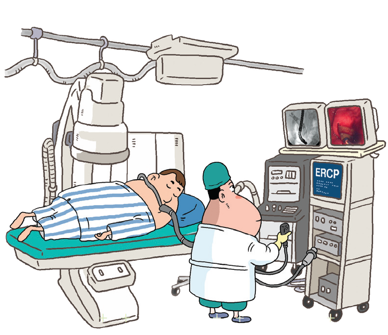
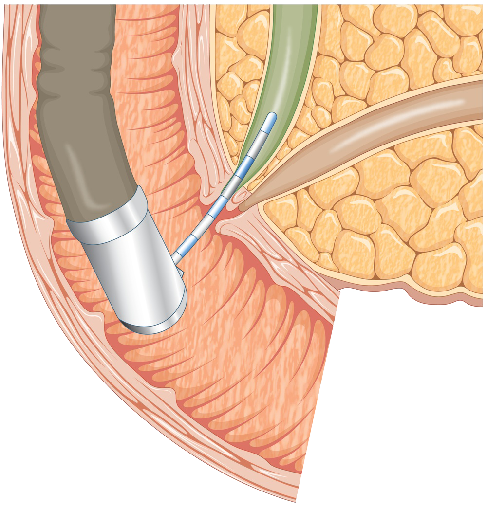
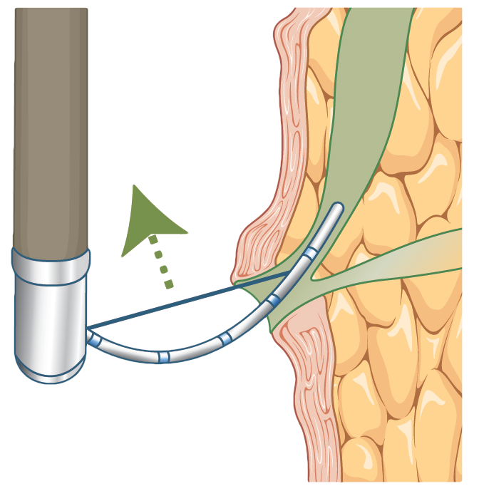
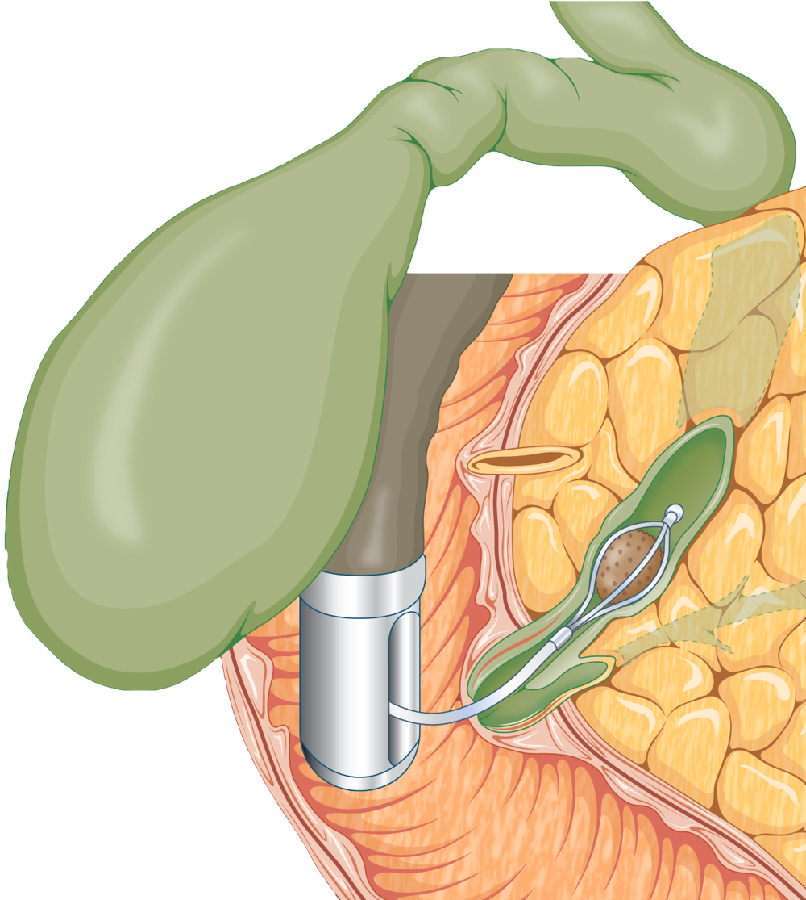
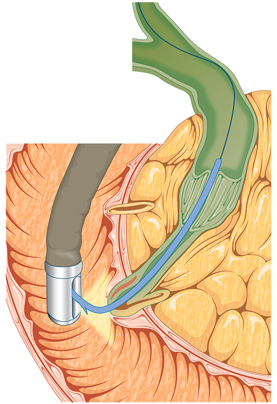

간단한 관찰만 할 경우에는 20~30분 정도 소요되지만, 특수 검사와 치료가 필요하면 1시간 이상 소요될 수 있습니다.
시술은 대부분 의식하 진정 수면상태로 시행함으로 마취상태가 아니므로 의식이 어느정도 있을 수 있으며, 시술 중에 환자의 협조가 매우 중요합니다.
|  |
| 시술 시 환자의 자세는 엎드리는 자세 즉, 복와위를 취하는데 이는 조영제를 주입하여 방사선 사진을 촬영 정확하게 하기 위한 자세입니다.
자세를 취 한후 수면유도 및 진통제를 투여 후 산소포화도 맥박 등을 관찰하는 모니터링 장비를 장착합니다.
|
|  |
| 유두부로 작은 관을 삽입하고, 조영제를 주입한 후 방사선 조영기로 담·췌관의 모양을 관찰합니다. |
|  |
| 담관담석 등의 제거가 필요한 경우, 고주파 절개기를 이용하여 유두부를 절개합니다. |
|  |
| 기구 (바스켓 또는 풍선)를 이용하여 담관담석을 제거합니다. |
|  |
| 췌장암이란 췌장에 생긴 암세포로 이루어진 종괴를 말합니다. 증상은 비특이적으로 복통과 체중 감소등을 호소하고, 췌두부암 경우에는 담관을 막아 황달이 생길 수 있습니다. 대부분의 초기에 증상이 없어 암이 진행되어 발견되는 경우가 많아 예후가 매우 나쁩니다. 어렵지만 조기에 진단하여 수술하는 것이 매우 중요합니다.
|
|